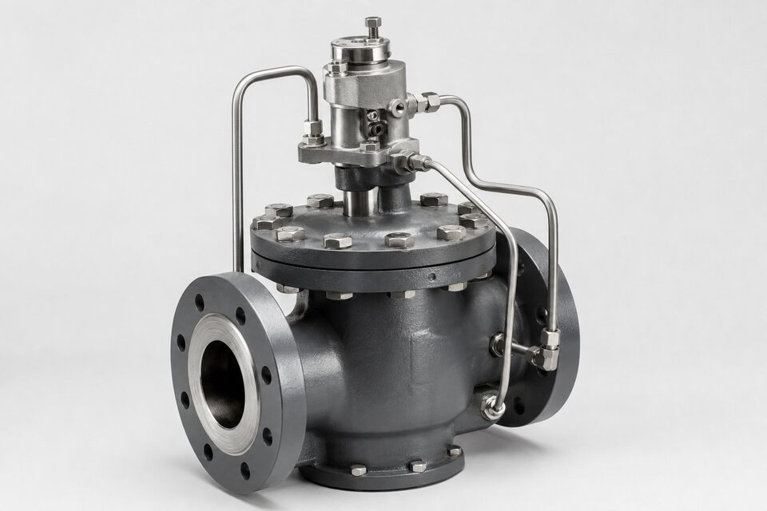

اصل کار؛ فرمان کوچک، نیروی بزرگ
در طرح پایلوتاپریتد، شیر اصلی با نیروی فشار خود خط حرکت میکند، نه با نیروی عملگر. یک شیر کوچک به نام پایلوت، مسیر فشار را به پشت دیسک یا پیستون شیر اصلی هدایت یا تخلیه میکند؛ با تغییر این فشار، شیر اصلی باز یا بسته میشود. نتیجه اینکه برای عملیات یک شیر بزرگ در فشار بالا، به جای یک عملگر عظیم، تنها به یک پایلوت کوچک نیاز است. این اصل، هم هزینه را کاهش میدهد و هم امکان کنترل دقیقتر نقاط بزرگ را فراهم میکند.

تفاوت با طرحهای مستقیم
در طرح مستقیم، عملگر (دستی، پنوماتیک یا موتوری) مستقیماً نیروی لازم برای غلبه بر فشار خط را تامین میکند. این طرح ساده است اما با بزرگ شدن سایز یا افزایش فشار، اندازه و هزینه عملگر به سرعت رشد میکند. در طرح پایلوت، عملگر فقط پایلوت کوچک را هدایت میکند و نیروی اصلی از خود خط میآید. بهای این مزیت، وابستگی به فشار خط است: اگر فشار خط پایین بیاید، نیروی حرکت هم کم میشود؛ بنابراین پایلوت برای نقاطی با فشار کاری مشخص و پایدار مناسب است، نه نقاطی که فشار آنها تا نزدیکی صفر افت میکند.
کاربردهای اصلی
- شیرهای کنترل بزرگ در خطوط انتقال که نیروی عملیات مستقیم بسیار زیاد است.
- شیرهای اطمینان پایلوتاپریتد برای فشارهای ست بالا و آببندی نزدیک فشار ست.
- شیرهای تخلیه و ضربهگیر در ایستگاههای پمپاژ بزرگ.
- شیرهای خودکار کنترل سطح و فشار در مخازن.
- نقاطی با اختلاف فشار کم که عملیات مستقیم در آنها نامطمئن است.
پایلوت در شیرهای اطمینان
شیرهای اطمینان پایلوتاپریتد جایگاه ویژهای دارند: در فشارهای ست بالا، طرح مستقیم فنری به فنرهای بسیار بزرگ و آببندی ضعیفتر نزدیک فشار ست نیاز دارد؛ در حالی که طرح پایلوت، آببندی بهتر و پایداری بیشتری نزدیک فشار ست فراهم میکند و عملکرد آن کمتر تحت تاثیر فشار برگشتی قرار میگیرد. به همین دلیل در سرویسهای حساس پالایشگاهی و نیروگاهی، برای نقاط با فشار بالا اغلب طرح پایلوت انتخاب میشود. البته پیچیدگی بیشتر و نیاز به هوای تمیز یا سیال تمیز در مسیر پایلوت، از نکات نگهداری این طرح است.
چه زمانی پایلوت انتخاب کنیم؟
تصمیم به استفاده از پایلوت با سه پرسش روشن میشود: آیا نیروی عملیات مستقیم در این سایز و فشار غیرمنطقی است؟ آیا فشار خط برای تامین نیروی پایلوت همیشه کافی است؟ و آیا سیال خط برای مسیرهای باریک پایلوت تمیز است؟ اگر پاسخ دو پرسش اول مثبت و سوم قابل مدیریت باشد، پایلوت انتخاب درستی است. در غیر این صورت، طرح مستقیم با عملگر بزرگتر یا طرحهای دیگر باید بررسی شوند. در استعلام، فشار حداقل و حداکثر خط را صریح ذکر کنید تا سازنده امکانسنجی پایلوت را انجام دهد.
جمعبندی
پایلوتاپریتد یعنی استفاده هوشمندانه از انرژی خود خط برای عملیات شیر؛ راهحلی که در سایزهای بزرگ و فشارهای بالا هم هزینه و هم ابعاد را کاهش میدهد. با شناخت وابستگی آن به فشار خط و ذکر شرایط واقعی در استعلام، میتوان از انتخاب درست این طرح اطمینان حاصل کرد و از مشکلات عملیاتی در نقاط کمفشار جلوگیری نمود.
سوالات رایج
شیر پایلوتاپریتد چگونه کار میکند؟
یک شیر کوچک (پایلوت) مسیر فشار خود خط را کنترل میکند؛ این فشار به پشت دیسک یا پیستون شیر اصلی اعمال شده و آن را باز یا بسته میکند. فرمان اصلی از پایلوت میآید اما نیروی حرکت از فشار خود خط تامین میشود.
چه زمانی به پایلوت نیاز داریم؟
در سایزهای بزرگ، فشارهای بالا یا اختلاف فشار کم، که نیروی لازم برای عملیات مستقیم بسیار زیاد است؛ پایلوت این نیرو را با انرژی خود خط مدیریت میکند.
مهمترین محدودیت پایلوت چیست؟
نیاز به حداقل اختلاف فشار یا فشار خط برای کارکرد؛ در نقاطی که فشار خط نزدیک صفر است، طرح پایلوت ممکن است عمل نکند و باید طرح جایگزین بررسی شود.
در شیرهای اطمینان هم پایلوت داریم؟
بله؛ شیرهای اطمینان پایلوتاپریتد برای سرویسهای حساس با فشار ست بالا و نیاز به آببندی نزدیک فشار ست استفاده میشوند.
مطالب مرتبط
با ذکر سایز، فشار خط و وظیفه شیر، گزینه پایلوتاپریتد متناسب به همراه مدارک عرضه میشود.
مشاهده صفحه محصول ← ثبت RFQ همین محصولتامین این تجهیزات را به پیشرو تجهیز فرتاک بسپارید
شرکت پیشرو تجهیز فرتاک تامینکننده تخصصی تجهیزات صنعتی برای پروژههای نفت، گاز، پتروشیمی، فولاد و نیروگاهی است. برای دریافت پیشنهاد فنی و قیمت، استعلام (RFQ) خود را ثبت کنید تا کارشناسان مهندسی فروش در کوتاهترین زمان پاسخ دهند.
- تامین شیرآلات صنعتیخانواده کامل شیر با گواهی مواد و تست
- تامین تجهیزات صنایع نفت و گازپکیج مواد مطابق وندورلیست